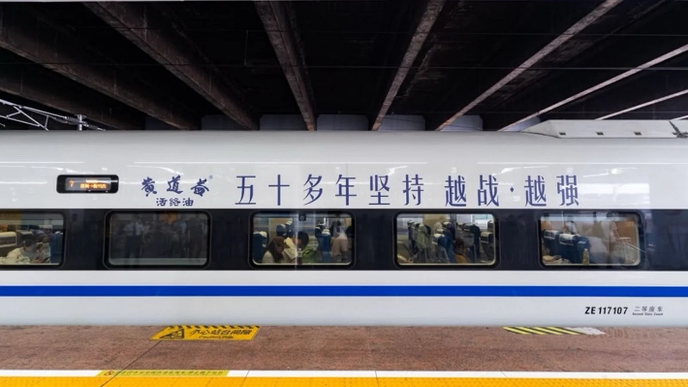
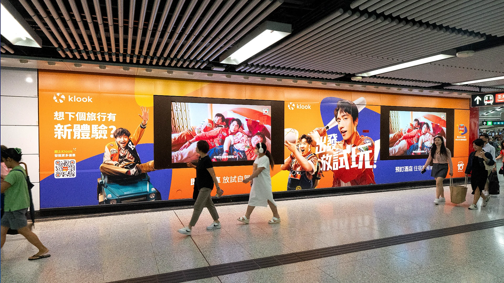
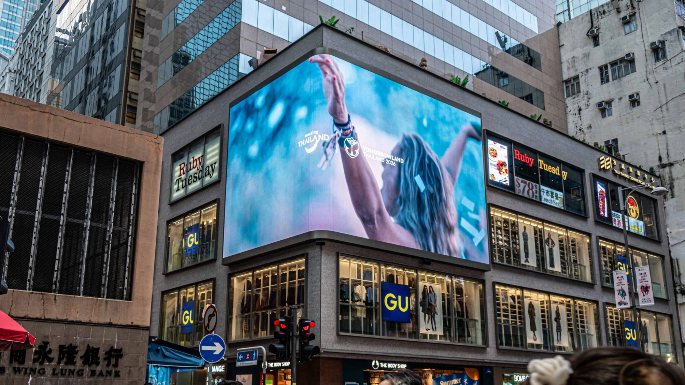

口岸广告
出入境人流 · 跨境消费
MEDIA DIRECTORY
从市场覆盖、受众接触到媒体形式，探索香港本地及跨境户外广告机会。
广告网络（Network Package）指跨位置或媒体的组合投放。
出入境人流 · 跨境消费

城际旅客 · 长途出行

粤港交通走廊

日常通勤 · 铁路网络

全港道路 · 区域覆盖

港岛地标 · 街道景观

指定站点 · 街道曝光

核心商圈 · 动态展示
没有完全符合条件的媒体类别。可调整筛选，或直接查询其他方案。
PLAN WITH HANABI
按市场、受众及投放需求，探索更多媒体选择。